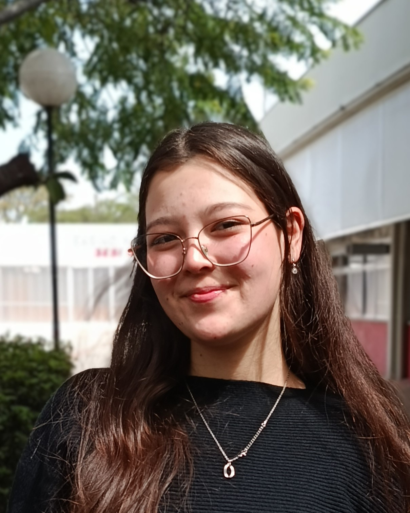

Isabela Batalos Venerando
Cuidado, Afeto e Pertencimento: A Jovem Trajetória de Isabela na Educação
Com apenas 19 anos, Isabela Batalos Venerando já traz consigo uma clareza inspiradora sobre a vocação que quer seguir. Estudante de Pedagogia, ela atua no Ensino Fundamental I do SESI como cuidadora escolar — uma função focada no acompanhamento e no suporte às crianças, especialmente no âmbito da educação inclusiva e especial.
Sua jornada no SESI começou há pouco mais de um ano, quando ingressou como estagiária em seu primeiro emprego. O desempenho e a dedicação abriram portas rapidamente: após o primeiro semestre, Isabela foi efetivada como cuidadora escolar. A transição para a nova função trouxe desafios, principalmente por se tratar de uma área mais específica da educação que exigia novos conhecimentos práticos.
Para superar essa fase, Isabela contou com o apoio de formações oferecidas pela própria instituição e com a troca diária com os colegas de trabalho. Essa vivência prática atiçou ainda mais sua curiosidade profissional, despertando o desejo de se especializar em Educação Especial assim que concluir a faculdade.
"Às vezes a gente pensa que está aqui para ensinar, mas acho que aprende até mais do que ensina", revela a jovem educadora sobre a troca constante com os alunos.
Ao falar sobre o papel do seu trabalho, Isabela espera ser um ponto de apoio e uma referência de confiança para os alunos. Seu objetivo vai além do suporte pedagógico; envolve também o acolhimento emocional para que cada estudante se sinta amado, respeitado e pertencente. Fora da escola, suas principais inspirações são sua mãe, Maria, e sua avó, Sandra.
Apesar dos desafios diários da área, Isabela reforça que atuar na educação é uma oportunidade de transformar vidas e ajudar os jovens a descobrirem seu próprio valor e potencial.